<<<<<<< HEAD
<!DOCTYPE html>
<html lang="en">
  <head>
    
	    <meta charset="utf-8">
	    <meta name="viewport" content="width=device-width, initial-scale=1, shrink-to-fit=no">
	    <meta name="description" content="Informational Website on the Sixties in a timeline format.">
	    <meta name="author" content="Jonah Seroczynski">
	    <meta name="keywords" content="Portfolio, Jonah, Seroczynski, Website Design, Coding, Web Developer, Timeline, 60s,sixties">

		<link rel="apple-touch-icon" sizes="180x180" href="assets/images/Favicon/apple-touch-icon.png">
		<link rel="icon" type="image/png" sizes="32x32" href="assets/images/Favicon/favicon-32x32.png">
		<link rel="icon" type="image/png" sizes="16x16" href="assets/images/Favicon/favicon-16x16.png">
		<link rel="manifest" href="assets/images/Favicon/site.webmanifest">

	   	<link rel="stylesheet" href="assets/css/bootstrap.min.css">
	    <link rel="stylesheet" href="https://use.fontawesome.com/releases/v5.7.0/css/all.css" integrity="sha384-lZN37f5QGtY3VHgisS14W3ExzMWZxybE1SJSEsQp9S+oqd12jhcu+A56Ebc1zFSJ" crossorigin="anonymous">
	    <link href="https://fonts.googleapis.com/css?family=Josefin+Slab:600&display=swap" rel="stylesheet">
	    <link href="https://fonts.googleapis.com/css?family=Special+Elite&display=swap" rel="stylesheet">
	   	<link rel="stylesheet" href="assets/css/main.css">


	    <title>Sixties Timeline</title>

	</head>


	<body>
		<header>
			<div class="jumbotron jumbotron-fluid d-flex justify-content-center align-items-center">
			  <div class="container">
			    <h1>The <br> Sixties</h1>
			  </div>
			</div>
		</header>

		<section class="year-row fluid" id="t1960">
			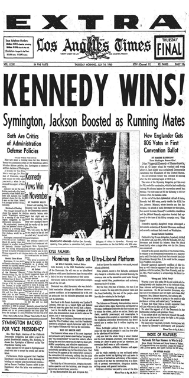
			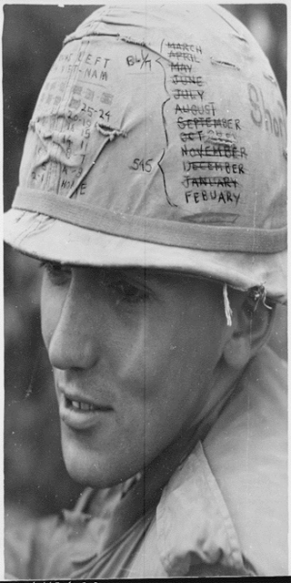
			
			
			
			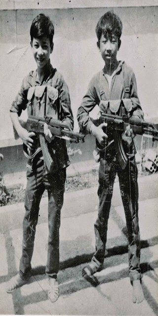
		</section>

		<section class="year-row" id="t1961">
			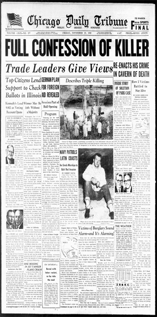
			
			
			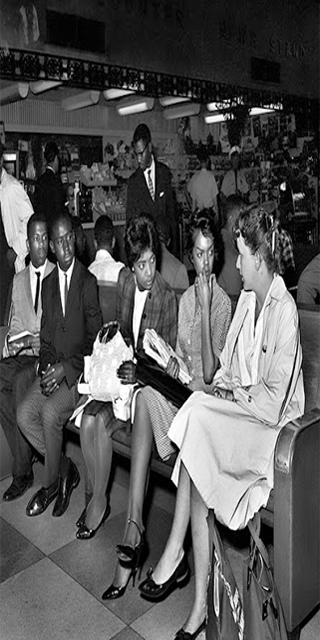
			
			
		</section>

		<section class="year-row" id="t1962">
			
			
			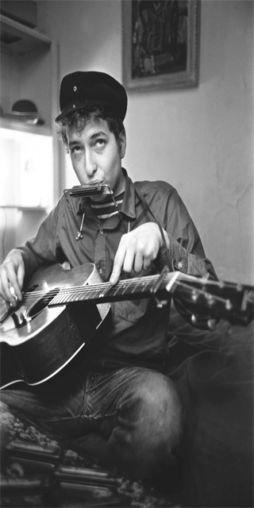
			
			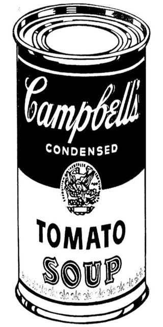
			
		</section>

		<section class="year-row" id="t1963">
			
			
			
			
			
			
		</section>

		<section class="year-row" id="t1964">
			
			
			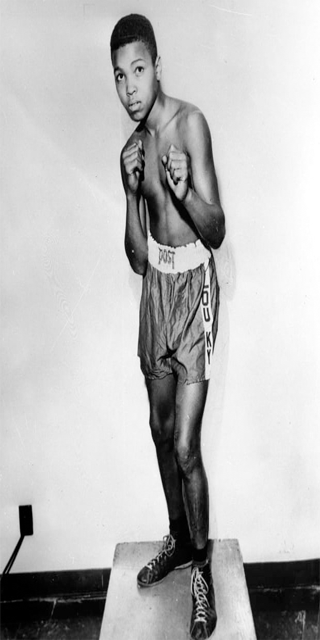
			
			
			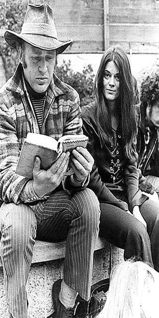
		</section>

		<section class="year-row" id="t1965">
			
			
			
			
			
			
		</section>

		<section class="year-row" id="t1966">
			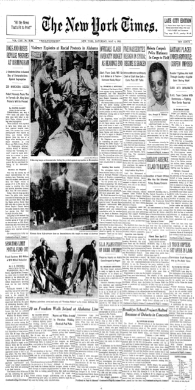
			
			
			
			
			
		</section>

		<section class="year-row" id="t1967">
			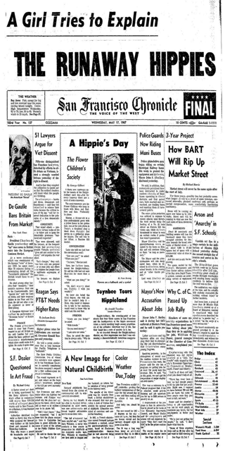
			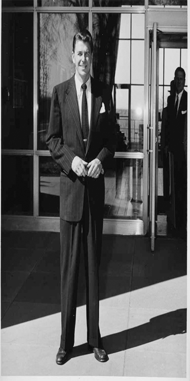
			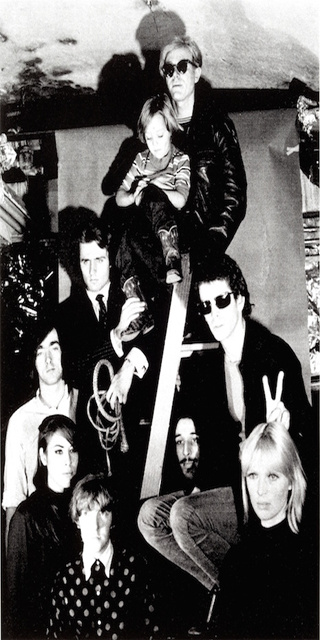
			
			
			
		</section>

		<section class="year-row" id="t1968">
			
			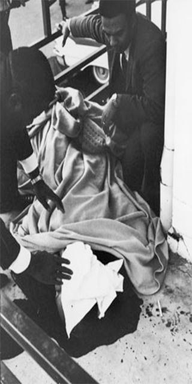
			
			
			
			
		</section>

		<section class="year-row" id="t1969">
			
			
			
			
			
			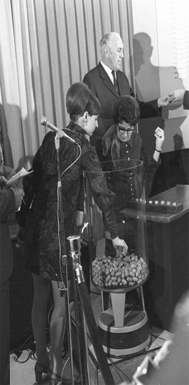
		</section>										


	<script src="https://code.jquery.com/jquery-3.4.1.slim.min.js" integrity="sha384-J6qa4849blE2+poT4WnyKhv5vZF5SrPo0iEjwBvKU7imGFAV0wwj1yYfoRSJoZ+n" crossorigin="anonymous"></script>
    <script src="https://cdn.jsdelivr.net/npm/popper.js@1.16.0/dist/umd/popper.min.js" integrity="sha384-Q6E9RHvbIyZFJoft+2mJbHaEWldlvI9IOYy5n3zV9zzTtmI3UksdQRVvoxMfooAo" crossorigin="anonymous"></script>
    <script src="assets/js/bootstrap.min.js"></script>									
	
	</body>
	</html>
=======
<html lang="en">
  <head>
    
	    <meta charset="utf-8">
	    <meta name="viewport" content="width=device-width, initial-scale=1, shrink-to-fit=yes">
	    <meta name="description" content="Informational Website on the Sixties in a timeline format.">
	    <meta name="author" content="Jonah Seroczynski">
	    <meta name="keywords" content="Portfolio, Jonah, Seroczynski, Website Design, Coding, Web Developer, Timeline, 60s,sixties">

	    <link rel="icon"  type="image/png" href="http://example.com/myicon.png">

	   	<link rel="stylesheet" href="assets/css/bootstrap.min.css">
	    <link rel="stylesheet" href="https://use.fontawesome.com/releases/v5.7.0/css/all.css" integrity="sha384-lZN37f5QGtY3VHgisS14W3ExzMWZxybE1SJSEsQp9S+oqd12jhcu+A56Ebc1zFSJ" crossorigin="anonymous">
	    <link href="https://fonts.googleapis.com/css?family=Special+Elite&display=swap" rel="stylesheet">
	   	<link rel="stylesheet" href="assets/css/main.css">


	    <title>Sixties Timeline</title>

	</head>


	<body>
		<header>
			<div class="jumbotron jumbotron-fluid d-flex justify-content-center align-items-center">
			  <div class="container">
			    <h1>The <br> Sixties</h1>
			  </div>
			</div>
		</header>
	</body>
>>>>>>> da8f10c50e63bdf8ff72d91bb79f975c60b2aa67
	</html>